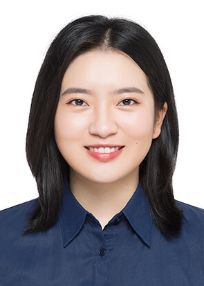
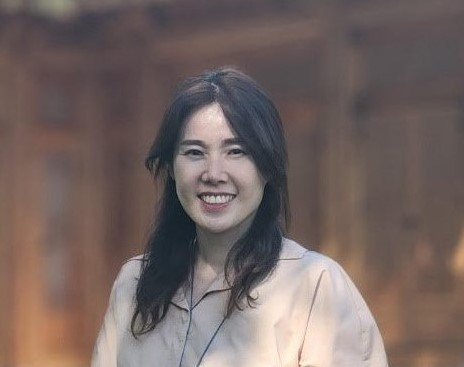

Emmanuel Sagoe recently worked as a Vice President with Citibank working on the bank's data strategies. Prior to joing Citibank, he was a Business Intelligence Lead at Wells Fargo Bank and the US Department of Treasury. He is a graduate of Columbia University and currently pursing MPA at the Harvard Kennedy School. On his spare time, Emmanuel teaches Business Intelligence and works with charitable organizations. He lives in Virginia with his family.
Jianing Wu is a MPP 2 student at HKS. She holds a B.A. in Public Administration from Shanghai Jiao Tong University. Her primary research focus is on urban development, urban renewal, and community development. She has served as a volunteer consultant at "A Better Community" (ABC) and worked part-time as a data analyst at the World Bank.
Yeonwook Lee is a MPA 2 student at HKS. Before Harvard, Yeonwook worked for the Ministry of National Defense of the Republic of Korea (South Korea) since 2006, gaining extensive experience developing and implementing national and international security policy. Most recently, Yeonwook was a Director of the National Security Council (NSC) Secretariat and oversaw NSC meetings, where the heads of security-related departments gathered to discuss and determine the most pending national security issues. Yeonwook holds an MPA from Seoul National University, and she graduated Summa Kum Laude from the Korean National Police University
Pat Boland is a MC/MPA student and a Foreign Service Officer with the U.S. Department of State. He recently completed a four year assignment in Taipei, Taiwan, where he served as an Economic Officer responsible for promoting U.S.-Taiwan economic ties, with a focus on the semiconductor industry, cybersecurity, and emerging technologies. In Washington, Pat worked at the Office of Taiwan Coordination and completed an excursion practicum at GE’s office in Washington, DC. Overseas, Pat managed governance and stabilization assistance programs on the Syria Transition Assistance Response Team (START) from U.S. Consulate General Istanbul, served as a consular officer at U.S. Consulate General Shanghai, China, and supported civil society assistance programs as a political officer at U.S. Embassy Cairo during the beginning days of the Arab Spring. A native of Falls Church, VA, Pat is a graduate of the University of Virginia, where he studied Foreign Affairs and Middle East Studies. He is married to Monica Liau, a freelance writer, and is the father of a two year old son. When back in his native Virginia, he and several close friends help manage a farm and AirBnB operation in central Virginia.